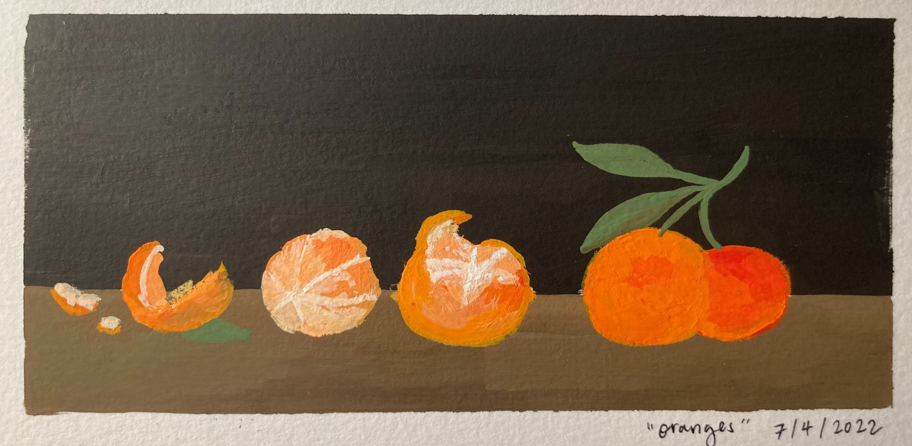

About Michelle
Hobbies
Painting
I've been interested in painting since high school. I primarily use gouache which is a type of watercolor and like painting people or architecture. I'm trying to branch out by incorporating more natural or colorful light into my works. Below is something I finished a couple months ago.

Video Games
I love playing video games in my free time. A group of friends and I are pretty addicted to the FPS game Valorant and play it almost nightly. It's a great way for me to spend time with my friends through a fun activity when they live far away or if we want to be socially distanced.
Interests
- Coffee. I'm trying not to develop a caffeine addiction, but I love coffee from Alchemist, especially their New Orlean's coffee which I could drink daily.
- Piano. I just began learning how to play the piano and it's a great way to destress.
- Driving. I don't mind spending time in traffic! I love listening to a podcast or some tunes and getting some me-time before my next destination.
Career Goals
- As a Political Communications student, I would like the opportunity to work as a Comms Director in a large electoral campaign or in an elected official's office.
- I'm currently working in a nonprofit, and a huge project is coming up in October. I'm pretty new to the role and would like to succeed in this donor cultivation event.
- I would like to start an online business, one day in the future. It seems tough and a lot of management, but I want to try to sell things online.